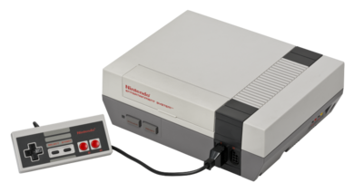
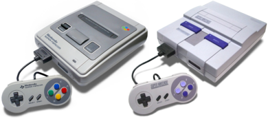
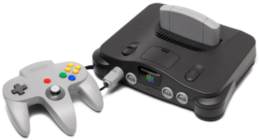
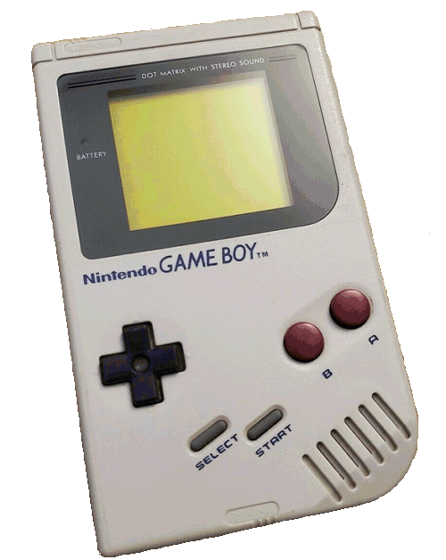

Histoire de Nintendo
Dans un contexte d'explosion du marché occidental, Nintendo lance sa première console en 1977, uniquement au Japon, la Color TV-Game 6. Plusieurs variantes lui succéderont : la Color TV-Game 15 (1977), la Color TV Game Racing 112 (1978), la Color TV Game Block Kuzushi (1979) et la Computewr TV Game (1980)
Console Marquantes



